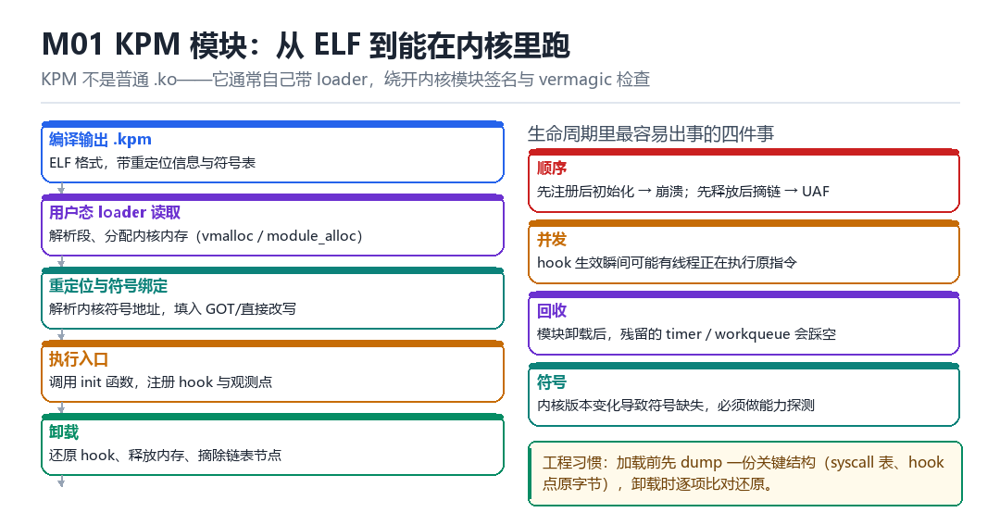

KPM 模块设计、装载与生命周期
KPM ELF、编译重定位、符号与 offset、安装/卸载顺序、退出回收
KPM 不是普通 .ko：它自己带 loader，自己解决符号，也自己负责收尾。
1.1 五个阶段

- 编译输出 .kpm：ELF 格式，保留符号表与重定位信息。
- 用户态 loader 读取：解析段，向内核申请内存（
vmalloc/module_alloc）。 - 重定位与符号绑定：解析内核符号地址，填入 GOT 或直接改写指令。
- 执行入口：调用 init 函数，注册 hook 与观测点。
- 卸载：还原 hook、释放内存、摘除链表节点。
1.2 四类风险
| 风险 | 表现 | 对策 |
|---|---|---|
| 顺序错 | 先注册后初始化 → 崩 | 严格按 init 顺序 |
| 并发 | hook 生效瞬间有线程在跑原指令 | 暂停/屏障/中转 |
| 回收不全 | 残留 timer / workqueue 踩空 | 逐项登记，逐项注销 |
| 符号缺失 | 换内核版本后找不到符号 | 能力探测 + 回退 |
1.3 生命周期管理清单
建议在模块里维护一张“资源表”：每申请一样东西就登记一行（内存、hook 点、timer、workqueue、链表节点、perf event），卸载时逐行注销。这样不会漏。
struct res { int type; void* ptr; void (*free)(void*); };
static struct res table[64]; static int n_res;
// 申请时：
table[n_res++] = (struct res){RES_MEM, p, kfree_wrap};
// 卸载时：
for (int i = n_res - 1; i >= 0; i--) table[i].free(table[i].ptr);1.4 本章自测
- KPM 为什么通常不走标准模块加载路径？
- 四类风险里，哪一类最难调试？
- 资源登记表解决了什么问题？
- 卸载顺序为什么要“倒序”？
1.5 深入：为什么 KPM 要自己带 loader
标准内核模块加载要过三道关：模块签名、vermagic 匹配、MODVERSIONS 符号 CRC 校验。任何一关不过，init_module 就返回失败。KPM 自己带 loader，等于绕开这三道关——代价是所有的正确性检查都要自己做。
| 检查 | 标准模块 | KPM |
|---|---|---|
| 签名 | 必须 | 跳过 |
| vermagic | 必须匹配 | 自己处理 |
| 符号 CRC | 必须匹配 | 自己解析 |
| 内存分配 | 内核代劳 | 自己申请 |
1.6 实战：加载失败怎么定位
dmesg | tail -40 # 内核有没有报错
cat /proc/kallsyms | grep <sym> # 符号在不在
cat /proc/modules # 模块列表（KPM 通常不在这里）
# 检查 loader 的返回值与 errno1.7 原理推演：为什么“模块”比“改内核”更容易维护
因为模块可以被卸载。改内核是“一次性、不可逆”的；模块是“可加载、可卸载、可替换”的。这让“试错”的成本从“刷机”降到“重新加载”。
| 方式 | 可逆性 | 迭代成本 |
|---|---|---|
| 改内核镜像 | 不可逆 | 高（要刷机） |
| 内核模块 | 可卸载 | 低 |
| KPM | 可卸载 | 低（但要自己管） |
代价是：模块必须自己处理“卸载时的清理”。清理不干净，就会在“卸载之后”崩溃——而这类崩溃最难定位。
1.8 数据细节：一次加载的内存布局
module_alloc 区: [代码][只读数据][可写数据]
↑ 需要可执行
vmalloc 区: [大块缓冲]
kmalloc 区: [小对象]注意“代码”必须落在可执行区。有些内核配了 CONFIG_STRICT_MODULE_RWX，会让模块的代码段变成只读——这时“运行时改自己的代码”就会失败，需要额外的处理（比如先改 PTE 权限）。
1.9 深入：一次加载失败的错误码对照
| 错误 | 含义 | 处理 |
|---|---|---|
| -ENOENT | 符号找不到 | 换符号或做探测 |
| -ENOMEM | 内存不足 | 减小模块体积 |
| -EINVAL | 参数 / 偏移不对 | 校验 ELF 解析 |
| -EPERM | 权限不足 | 检查 SELinux / 能力 |
把错误码打出来，是最省力的排查方式。很多“加载失败”其实只是 -ENOENT——某个符号在新内核里没了。
1.10 深入：为什么“卸载”比“加载”难
因为加载是“从无到有”，卸载是“从有到无”——后者要处理“还有谁在引用我”。定时器、workqueue、hook 点、链表节点、内存，任何一样没清干净，都会在之后某个时刻崩。
1. 所有 hook 点已还原（逐字节比对）
2. 所有 timer / work 已 cancel 并 flush
3. 所有链表节点已摘除
4. 所有内存已释放
5. 引用计数归零1.11 实战：写一个“资源登记”宏
#define REG(type, ptr, fn) register_res(type, ptr, fn)
#define UNREG_ALL() unregister_all()
p = module_alloc(size); REG(RES_MEM, p, vfree_wrap);把 .kpm 拖进 EL1 的那只手
串口线接着，dmesg 一行行往上滚。你敲下装载命令的那一刻，用户态的 loader 正把 ELF 里的 PT_LOAD 一段段搬进内核地址空间：先申请页、再拷贝、再逐项改重定位，最后把 init 的地址写进一个调用桩。此刻你写下的每一行代码都跑在 EL1，页表是内核的页表，栈是内核的栈，指针错一次就直接 panic——没有 vermagic 替你挡版本，没有模块引用计数替你挡卸载，也没有人为你兜底。
标准 .ko 走的是 init_module：内核自己验签名、查 vermagic、建 struct module、挂 sysfs、维护依赖图。KPM 走的是另一条路：这些活全部由 loader 和模块自己承担。好处是能装进不开放模块加载的内核，代价是每一个你没做的检查，都变成一个没人替你做的检查。
装载五拍：谁把什么写到哪里
- loader → 对 .kpm 文件：读出
Elf64_Ehdr与程序头表，逐项记下p_vaddr、p_filesz、p_memsz、p_flags，结果是一张待映射清单；只读段与可执行段必须分开建权限，否则后面改代码页会踩 W^X。 - loader → 对内核：通过已植入的超级调用申请
module_alloc区间，结果拿到一段 EL1 可执行的虚拟地址；ARM64 上这段地址通常落在VMALLOC附近，与B指令的 ±128MB 跳转范围要一起核算。 - loader → 对每个 PT_LOAD 段：按
p_filesz拷贝文件内容，再把p_memsz - p_filesz的尾部整段清零，结果是 .bss 里的静态变量从 0 开始；漏掉清零，未初始化全局量会带着脏数据进 init。 - loader → 对重定位表：拿
kallsyms_lookup_name或导出符号表解析每个未定义符号，把R_AARCH64_ABS64、R_AARCH64_CALL26、R_AARCH64_ADR_PREL_PG_HI21逐项改写，结果是外部调用指向真实内核地址；CALL26超出 ±128MB 时必须插 veneer 中转，否则链接期看着正常、运行期跳飞。 - loader → 对模块入口：把 init 地址写进调用桩并触发，结果是模块开始注册 hook、建 proc 节点、起 timer；init 返回非零立刻按倒序回滚，已经映射的段一并释放。
卸载是比装载更危险的那一半
装载失败顶多是回滚，卸载失败是整个内核跟着塌。原因在于“卸载”这个动作没有原子性：hook 入口刚被还原的那个瞬间，可能正有一个 CPU 停在 trampoline 里执行，另一个 CPU 刚从 TLB 里取到旧映射。所以卸载不是“把装载倒着做一遍”，而是分出一条明确的停流—等待—回收三段路径。
- 模块 → 对 hook 入口：用一次原子写入把跳转槽换回原字节，结果是后续所有调用走原路径，不再有新的执行流进入 trampoline；先在旧代码上“开口”再摘钩子，会留下一个短暂无处可跳的窗口。
- 模块 → 对所有 CPU：
stop_machine或一次 RCU 宽限期，等每个核都报告已离开被改代码段，结果是“在途执行”清零；这一步省掉，后面vfree回收的就是别人脚下的那块地。 - 模块 → 对资源登记表：按登记的逆序逐行调注销函数，结果是 timer、workqueue、perf event、hook 点、链表节点、内存依次归位；倒序的原因是后申请的资源往往依赖先申请的资源。
- 模块 → 对 module_alloc 区间：最后才
vfree并把模块从管理链表摘掉，结果是内核里不再留任何指向已释放地址的指针；提前释放会在下一次中断里表现为一个莫名其妙的Unable to handle kernel paging request。
| 资源 | 申请动作 | 注销动作 | 漏登记的后果 |
|---|---|---|---|
| timer | timer_setup + mod_timer | del_timer_sync | 回调踩已释放内存，oops 延迟几分钟才出现 |
| workqueue | schedule_work | cancel_work_sync | work 仍在队列里，use-after-free |
| perf event | register_user_hw_breakpoint | unregister_hw_breakpoint | 调试槽位永久占用，后续注册 -ENOSPC |
| hook 点 | 改跳转槽 / text_poke | 原子写回原字节 | 跳到已回收的 trampoline |
| 内核内存 | module_alloc / vmalloc | vfree | /proc/vmallocinfo 残留段 |
最小可复现实验：装一次、卸一次、数一遍
# 0. 记录实验前基线（原值要记下来，实验结束改回）
cat /proc/sys/kernel/kptr_restrict
cat /proc/vmallocinfo | grep -c demo
# 1. 装载最小模块：只做映射 + 一条 init 打印 + 资源表登记
insmod /data/local/tmp/demo.kpm
dmesg | tail -n 20
# 成功：出现 init 完成、重定位项数与登记资源数相等的两行日志
# 失败：返回 -ENOEXEC = ELF 头/段权限不对；返回 -EINVAL = 有未解析重定位项
# 2. 卸载并核对是否真的收干净
rmmod demo
dmesg | tail -n 20
cat /proc/vmallocinfo | grep -c demo
# 成功：释放行数等于 init 时登记行数，且上面计数回到 0
# 失败：计数非 0 = 资源表漏了一项；日志停在半途 = 卡在 del_timer_sync把这段脚本存成 check_m01.sh，每次改 loader 都跑一遍。真正的判据不是“能装上”，而是装—卸循环跑十次之后，`/proc/vmallocinfo` 与基线完全一致；只要有一次计数漂移，就说明某条异常路径上少了一次注销。
这套“登记表 + 倒序注销”的思路并不只属于内核：Frida 部 F04 讲 server 里 Device / Session / Script 三层对象树时，Session 没 detach 就一直占着目标进程；LSPosed 部 L06 讲 Binder、FD 与 linker 账本收口时，要求每项注册都有对应的注销。对象从 Session 换成 timer、从 Script 换成 perf event，账本的形状一模一样。